콘크리트산업기사 (2018-08-19 기출문제)
1과목: 콘크리트재료 및 배합
1. 10회의 콘크리트 압축강도 시험으로부터 구한 압축강도의 표준편차가 5MPa일 때 설계기준 압축강도 20MPa인 콘크리트의 배합강도는?
- 26.7MPa
- 27.0MPa
- 28.15MPa
- 28.35MPa
(정답률: 85%)

2. 굵은골재의 절대 건조 상태의 밀도를 구하는 계산식으로 옳은 것은?
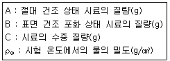
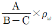
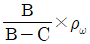
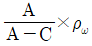
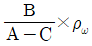
(정답률: 70%)
3. 콘크리트용 혼합수에 대한 다음 설명 중 KS F 4009 레디믹스트 콘크리트 부속서에서 규정하고 있는 내용으로 옳은 것은?
- 하천수는 상수돗물 이외의 물에 대한 품질규정에 적합하지 않으면 사용할 수 없다.
- 상수돗물 이외의 물에 대한 품질기준으로 용해성 증발 잔류물의 양은 10g/L 이하로 규정하고 있다.
- 상수돗물, 상수돗물 이외의 물 및 회수수를 혼합하여 사용하는 경우는 시험을 하지 않아도 사용할 수 있다.
- 회수수는 배합보정을 실시하면 슬러지 고형분율에 관계없이 사용할 수 있다.
(정답률: 69%)
4. 체가름 시험결과 잔골재 조립률 2.65, 굵은 골재 조립률 7.38이며, 잔골재 대 굵은 골재비를 1:1.6으로 할 때 혼합골재의 조립률은?
- 4.56
- 5.56
- 6.56
- 7.56
(정답률: 84%)
5. 다음 중 AE 감수제의 사용으로 얻을 수 있는 효과가 아닌 것은?
- 단위수량을 감소시킨다.
- 동결융해에 대한 저항성이 증대된다.
- 투수성이 향상된다.
- 수밀성이 향상된다.
(정답률: 69%)
6. 콘크리트 배합 설계의 기본 원칙에 대한 설명으로 틀린 것은?
- 적당한 강도와 내구성을 확보할 것
- 가능한 단위 수량을 적게 할 것
- 경제성을 고려할 것
- 굵은골재 최대치수가 작은 것을 사용할 것
(정답률: 91%)
7. 콘크리트용 골재에 요구되는 일반적인 성질이 아닌 것은?
- 골재는 표면이 매끄럽고 모양은 사각형에 가까울 것
- 골재는 내마모성과 내화성이 있을 것
- 크고 작은 알맹이의 혼합 정도 즉, 입도가 적당할 것
- 골재의 강도는 단단하고 강할 것
(정답률: 89%)
8. 잔골재를 여러 종류의 체로 가름한 결과, 각 체에 남는 누계량의 질량백분율이 아래의 표와 같이 나타났다. 이 잔골재의 조립률(F.M)은?
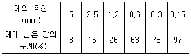
- 2.27
- 2.45
- 2.73
- 2.80
(정답률: 72%)
9. 혼화재의 저장방법으로 틀린 것은?
- 방습적인 사일로 또는 창고 등에 품종별로 구분하여 보관한다.
- 장기 저장이 가능하므로 입하하는 순서와 상관없이 사용한다.
- 장기간 저장한 혼화재는 사용하기 전에 시험을 실시하여 품질을 확인해야 한다.
- 혼화재는 취급 시에 비산하지 않도록 주의한다.
(정답률: 88%)
10. 콘크리트용 재료 중 시멘트에 대한 설명으로 틀린 것은?
- 시멘트는 석회석질, 점토질, 규석질, 철질 등의 혼합물을 약 1450℃ㄲ까지 가열시켜 얻은 클링커에 석고를 가하여 분쇄한 것이다.
- 석고는 시멘트의 내염화 반응성능을 향상시키기 위해 첨가한다.
- 포틀랜드시멘트 조성에는 보통시멘트, 중용열시멘트, 조강시멘트, 저열시멘트, 내황산염 시멘트 등이 존재한다.
- 마그네슘, 나트륨, 칼슘 등은 시멘트의 필수성분은 아니지만 구성원소의 성분으로 불순물로 시멘트를 존재하게 되며, 이런 성분의 종류와 양에 따라 시멘트의 특성이 변화하게 된다.
(정답률: 78%)
11. 콘크리트 배합에 대한 일반적인 설명으로 틀린 것은?
- 잔골재율은 단위 시멘트량이 최소가 되도록 시험에 의해 정하여야 한다.
- 단위 사맨트량은 원칙적으로 단위수량과 물-결합재비로부터 정하여야 한다.
- 물-결합재비는 소요의 강도, 내구성, 수밀성 및 균열저항성 등을 고려하여 정하여야 한다.
- 배합강도를 결정하기 위한 콘크리트 압축강도의 표준편차는 실제 사용한 콘크리트의 30회 이상의 시험실적으로부터 결정하는 것을 원칙으로 한다.
(정답률: 65%)
12. 시멘트의 일반적인 성질에 대한 설명으로 틀린 것은?
- 시멘트의 응결은 시멘트의 수화반응과 밀접한 관계가 있다.
- 시멘트의 수화는 화학반응이므로 온도에 영향을 받는다.
- 시멘트는 대기 중에서 수분과 CO2와의 반응으로 품질이 저하된다.
- 미분쇄한 시멘트는 수화가 느리고 장기강도가 증가한다.
(정답률: 78%)
13. 콘크리트의 배합에 있어서 단위시멘트량에 관한 일반적인 설명으로 옳지 않은 것은?
- 단위시멘트량이 증가하면 슬럼프가 저하한다.
- 단위시멘트량이 증가하면 수화열이 증가한다.
- 단위시멘트량이 증가하면 강도가 증가한다.
- 단위시멘트량이 증가하면 공기량이 증가한다.
(정답률: 76%)
14. 콘크리트의 내동해성을 기준으로 하여 물-결합재비를 정할 경우 아래의 표와 같은 노출상태일 때 보통골재 콘크리트의 최대 물-결합재비로 옳은 것은?
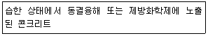
- 0.55
- 0.50
- 0.45
- 0.40
(정답률: 67%)
15. 콘크리트배합에서 시방배합을 현장배합으로 고칠 경우 고려해야 할 사항이 아닌 것은?
- 골재의 표면수율
- 잔골재 중 5mm 체에 남는 양
- 혼화제를 물에 희석한 양
- 시멘트의 비중
(정답률: 56%)
16. 잔골재의 절대건조상태 질량이 300g, 표면건조 포화상태 질량이 330g, 습윤상태 질량이 350g일 때 흡수율과 표면수율은 각각 얼마인가?
- 흡수율:8%, 표면수율:8%
- 흡수율:10%, 표면수율:6%
- 흡수율:12%, 표면수율:4%
- 흡수율:14%, 표면수율:2%
(정답률: 75%)
17. 해안선으로부터 200m 떨어진 육상지역에 콘크리트 구조물을 신축할 경우 사용하는 시멘트로 부적절한 것은?
- 고로슬래그 시멘트
- 중용열 포틀랜드 시멘트
- 조강 포틀랜드 시멘트
- 플라이애시 시멘트
(정답률: 67%)
18. 콘크리트용 화학 혼화제의 품질규격 항목(KS F 2560)이 아닌 것은?
- 오토클리이브 팽창도(%)
- 감수율(%)
- 압축강도비(%)
- 블리딩량의 비(%)
(정답률: 51%)
19. 콘크리트용 혼화재로서 플라이애시의 특징이 아닌 것은?
- 콘크리트의 워커빌리티를 좋게 하고 사용수량을 감소시킬 수 있다.
- 플라이애시를 사용한 콘크리트는 수화열이 적어 매스콘크리트용에 적합하다.
- 플라이애시를 사용한 콘크리트는 조기강도는 낮으나 장기강도는 크다.
- 플라이애시를 사용한 콘크리트는 경화시 건조수축이 큰 것이 단점이지만, 화학적 저항성이 우수하다.
(정답률: 58%)
20. 콘크리트용 고로슬래그 미분말의 품질을 평가하기 위한 시험으로 적합하지 않은 것은?
- 밀도
- 활성도지수
- 전알칼리량
- 비표면적(블레인)
(정답률: 58%)
2과목: 콘크리트제조, 시험 및 품질관리
21. 콘크리트의 빌리딩 시험에 대한 설명으로 틀린 것은?
- 시험 중에는 실온 20±3℃로 한다.
- 콘크리트를 채워 넣을 때 콘크리트의 표면이 용기의 가장자리에서 2cm정도 높아지도록 고른다.
- 기록한 처음 시각에서 60분 동안은 10분마다 콘크리트 표면에 스며 나온 물을 빨아낸다.
- 물을 쉽게 빨아내기 위하여 2분 전에 두께 약 5cm의 블록을 용기의 한쪽 밑에 주의 깊게 괴어 용기를 기울이고, 물을 빨아낸 후 수평 위치로 되돌린다.
(정답률: 62%)
22. 관입 저항침에 의한 콘크리트의 응결시간 시험(KS F 2436)에서 초결시간에 대한 설명으로 옳은 것은?
- 관입 저항이 1.25MPa이 될 때의 시간을 초결시간으로 결정한다.
- 관입 저항이 3.5MPa이 될 때의 시간을 초결시간으로 결정한다.
- 관입 저항이 7MPa이 될 때의 시간을 초결시간으로 결정한다.
- 관입 저항이 28MPa이 될 때의 시간을 초결시간으로 결정한다.
(정답률: 77%)
23. 골재의 저장에 대한 설명으로 틀린 것은?
- 잔골재 및 굵은 골재에 있어 종류와 입도가 다른 골재는 각각 수분하여 따로따로 저장한다.
- 골재의 받아들이기, 저장 및 취급에 있어서는 대소의 알을 분리한다.
- 골재의 저장설비에는 적당한 배수시설을 설치한다.
- 여름철에는 적당한 상옥시설을 하거나 살수를 하는 등 고온 상승 방지를 위한 적절한 시설을 하여 저장한다.
(정답률: 70%)
24. 콘크리트의 비비기에 대한 설명으로 틀린 것은?
- 비비기 시간의 시험을 하지 않은 경우 그 최소 시간은 강제식 믹서일 때에는 1분 이상을 표준으로 한다.
- 비비기는 미리 정해 둔 비비기 시간의 3배 이상 계속해서는 안 된다.
- 콘크리트를 오래 비비면 골재가 파쇄되어 미분의 양이 많아질 우려가 있다.
- 콘크리트를 오래 비빌수록 AE콘크리트의 경우는 공기량이 증가한다.
(정답률: 63%)
25. 다음 관리도 종류에서 계량값 관리도에 속하지 않는 것은?
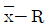
관리도- c 관리도
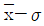
관리도- x 관리도
(정답률: 70%)
26. 현장 품질관리에 있어 관리도를 사용하려할 때 가장 먼저 행해야 할 것은?
- 관리할 항목을 선정한다.
- 관리도의 종류를 선정한다.
- 이상원인을 발견하면 이를 규명하고 조치한다.
- 관리하고자 하는 제품을 선정한다.
(정답률: 74%)
27. 침하균열을 방지하기 위한 대책으로 옳지 않은 것은?
- 단위수량을 크게 한다.
- 타설속도를 늦게 한다.
- 1회 타설 높이를 작게 한다.
- 슬럼프가 작은 콘크리트를 잘 다짐해서 시공한다.
(정답률: 66%)
28. 콘크리트의 워커빌리티에 대한 설명으로 틀린 것은?
- 시멘트량이 많을수록 콘크리트는 워커블하게 된다.
- 온도가 높을수록 슬럼프는 증가되고, 수송에 의한 슬럼프 감소는 줄어든다.
- 플라이애시를 사용하면 워커빌리티가 개선된다.
- 둥근 모양의 천연 모래가 모가 진 것이나 편평한 것이 많은 부순 모래에 비하여 워커블한 콘크리트를 얻기 쉽다.
(정답률: 69%)
29. 품질관리의 진행순서로 옳은 것은?
- 계획→검토→실시→조치
- 계획→실시→조치→검토
- 계획→검토→조치→실시
- 계획→실시→검토→조치
(정답률: 85%)
30. 시멘트 분말도가 높은 경우에 일어나는 현상이 아닌 것은?
- 수화반응이 빨라진다.
- 발열량이 낮아지고 수축균열이 많이 생긴다.
- 응결 및 강도의 증진이 크다.
- 풍화되기 쉽다.
(정답률: 73%)
31. 동결 융해 저항성을 알아보기 위한 급속 동결 융해에 대한 콘크리트의 저항 시험방법을 설명한 것으로 틀린 것은?
- 동결 융해 1사이클의 소요시간은 4시간 이상, 8시간 이하로 한다.
- 동결 융해 1사이클은 공시체 중심부의 온도를 원칙으로 하며 원칙적으로 4℃에서 -18℃로 떨어지고, 다음에 -118℃에서 4℃로 상승되는 것으로 한다.
- 시험의 종료는 300사이클로 하며, 그때까지 상대 동 탄성 계수가 60% 이하가 되는 사이클이 있으면 그 사이클에서 시험을 종료한다.
- 특별히 다른 재령으로 규정되어 있지 않는 한 공시체는 14일 간 양생한 후 동결융해 시험을 시작한다.
(정답률: 58%)
32. 레디믹스트 콘크리트의 장점으로 거리가 먼 것은?
- 품질이 균일한 콘크리트를 얻을 수 있다.
- 주문제조하기 때문에 공기에 영향을 미치지 않는다.
- 일반적으로 콘크리트의 생산비용이 많아지게 된다.
- 소요 콘크리트 재료비의 산정이 용이하다.
(정답률: 74%)
33. 콘크리트의 압축강도 시험결과에 대한 설명으로 틀린 것은?
- 재하속도가 빠르면 강도가 작아진다.
- 공시체의 단면에 요철이 있으면 강도가 실제보다 작아지는 경향이 있다.
- 공시체의 치수가 클수록 강도는 작게 된다.
- 시험 직전에 공시체를 건조시키면 일시적으로 강도가 증대한다.
(정답률: 64%)
34. 탄산화의 깊이가 6.0m가 되려면 일반적인 경우에 있어서 소요되는 경과 년수는 몇 년인가? (단, 탄산화 속도계수는 4이다.)
- 1.75년
- 2.0년
- 2.25년
- 2.5년
(정답률: 69%)
35. 비파괴시험법 중 타격법에 해당되는 것은?
- 반발경도법
- 초음파속도법
- 전기저항법
- 자연전위법
(정답률: 80%)
36. 다음 ()에 알맞은 것은?
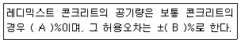
- A:2.5, B:1.0
- A:3.0, B:1.5
- A:4.0, B:1.0
- A:4.5, B:1.5
(정답률: 72%)
37. 콘크리트 재료의 계량에 대한 설명으로 옳지 않은 것은?
- 계량은 현장배합에 의해 실시하는 것으로 한다.
- 각 재료는 1배씩 질량으로 계량하여야 한다.
- 시멘트의 계량의 허용오차는 ±2% 이다.
- 연속믹서를 사용할 경우, 각 재료는 용적으로 계량해도 좋다.
(정답률: 70%)
38. ø150mm×300mm인 콘크리트 공시체로 압축강도 시험을 실시한 결과 400kN의 하중에서 파괴되었다. 이 공시체의 압축강도는?
- 18.4MPa
- 20.8MPa
- 22.6MPa
- 24.2MPa
(정답률: 70%)
39. 150mm×150mm×530mm인 콘크리트 시험체로 휨강도 실험을 하였다. 실험 시 시간을 450mm로 하였으며, 최대하중이 112.5kN에서 파괴되었다. 이 콘크리트의 휨강도는?
- 15MPa
- 30MPa
- 45MPa
- 60MPa
(정답률: 68%)
40. 다음 중 굳지 않은 콘크리트의 성질을 알아보는 시험방법이 아닌 것은?
- 염화물 함유량 시험
- 공기량 시험
- 슬럼프 시험
- 슈미트해머 시험
(정답률: 77%)
3과목: 콘크리트의 시공
41. 속이 빈 원통형 콘크리트 제품의 제조에 사용하는 다짐방법 중 가장 적합한 방법은?
- 봉다짐
- 진동다짐
- 원심력다짐
- 가압성형다짐
(정답률: 73%)
42. 내부진동기를 사용하여 콘크리트 다지기를 할 경우 표준으로 틀린 것은?
- 진동다지기를 할 때에는 내부진동기를 하층의 콘크리트 속으로 0.1m 정도 찔러 넣는다.
- 진동기의 삽입간격은 일반적으로 0.5m 이하로 하는 것이 좋다.
- 1개소당 진동시간은 다짐할 때 블리딩 수 및 레이턴스가 표면 상부로 부상할 때까지 실시한다.
- 내부진동기는 콘크리트를 횡방향으로 이동시킬 목적으로 사용하지 않아야 한다.
(정답률: 57%)
43. 고강도 콘크리트에 대한 설명으로 옳은 것은?
- 고강도 콘크리트는 빈배합이며, 시멘트 대체 재료인 플라이애쉬나 실리카 퓸 등의 적용은 적절하지 않다.
- AE제(공기연행제)의 적용은 고강도 콘크리트의 제조에 필수적이며 콘크리트의 강도 증진에 크게 기여한다.
- 고강도의 콘크리트를 얻기 위해서는 소요의 워커빌리티를 얻을 수 있는 범위 내에서 단위수량은 가능한 크게 하여야 한다.
- 고강도 콘크리트는 설계기준강도만 높은 것이 아니라 높은 내구성을 필요로 하는 철근 콘크리트 공사에도 적용될 수 있다.
(정답률: 56%)
44. 수화열이나 건조수축으로 인한 콘크리트 구조물의 변형이 구속됨으로써 발생할 수 있는 균열에 대한 대책 중의 하나로, 소정의 간격으로 단면 결손부를 설치한 것을 지칭하는 것은?
- 콜드조인트
- 겹침이음
- 균열유발이음
- 전단키
(정답률: 80%)
45. 대규모 시멘트 콘크리트 포장 공사에서 다져지지 않은 콘크리트를 포설면에 고르게 펴는 장비로 적합하지 않은 것은?
- 벨트형 스프레더
- 호퍼용 스프레더
- 스크류형 스프레더
- 슬림폼 페이버
(정답률: 71%)
46. 프리플레이스트 콘크리트에 사용하는 잔골재의 조립률은 어느 정도 범위를 가져야 하는가?
- 1.0~1.4
- 1.4~2.2
- 2.3~3.1
- 3.2~4.3
(정답률: 73%)
47. 영구 지보재 개념으로 숏크리트를 타설하는 경우 설계기준압축강도는 얼마 이상으로 하여야 하는가?
- 18MPa
- 21MPa
- 28MPa
- 35MPa
(정답률: 52%)
48. 팽창콘크리트에 사용하는 팽창재의 취급 및 저장에 대한 설명으로 틀린 것은?
- 팽창재는 풍화되지 않도록 저장하여야 한다.
- 포대 팽창재는 15포대 이하로 쌓아야 한다.
- 포대 팽창재는 지상 0.3m 이상의 마루 위에 쌓아 운반이나 검사에 편리하도록 배치하여 저장하여야 한다.
- 포대 팽창재는 사용 직전에 포대를 여는 것을 원칙으로 하며, 저장 중에 포대가 파손된 것은 공사에 사용할 수 없다.
(정답률: 80%)
49. 한중콘크리트의 배합에 대한 설명으로 틀린 것은?
- 물-결합재비는 원칙적으로 45% 이하로 하여야 한다.
- 단위수량은 소요의 워커빌리티를 유지할 수 있는 범위내에서
- 초기동해에 필요한 압축강도가 초기양생기간 내에 얻어지도록 배합하여야 한다.
- 공기연행 콘크리트를 사용하는 것을 원칙으로 한다.
(정답률: 60%)
50. 철근이 배치된 일반적인 매스콘크리트 구조물에서 균열발생을 제한할 경우의 표준적인 온도균열지수 값으로 옳은 것은?
- 1.5 이상
- 1.2~1.5
- 0.7~1.2
- 0.7 이하
(정답률: 67%)
51. 다음 중 한중콘크리트에 사용되는 보온양생방법이 아닌 것은?
- 습윤양생
- 급열양생
- 단열양생
- 피복양생
(정답률: 68%)
52. 일반수중콘크리트의 타설의 원칙을 설명한 것으로 틀린 것은?
- 콘크리트는 수중에 낙하시키지 않아야 한다.
- 콘크리트면을 가능한 수평하게 유지하면서 소정의 높이 또는 수면 상에 이를 때까지 연속해서 타설하여야 한다.
- 한 구획의 콘크리트 타설을 완료한 후 완전 경화된 이후 다시 타설하여야 하며, 이때 레이턴스를 제거하지 않아야 한다.
- 트레미나 콘크리트 펌프 등을 사용해서 타설하여야 한다.
(정답률: 73%)
53. 바닥틀의 시공이음의 위치로 적당한 것은?
- 슬래브나 보의 지점 부분
- 슬래브나 보의 경간 중앙부 부근
- 슬래브나 보의 경간 1/4 지점
- 슬래브나 보의 경간 3/4 지점
(정답률: 75%)
54. 숏크리트 작업의 일반적인 사항으로 틀린 것은?
- 숏크리트는 빠르게 운반하고 혼화제를 첨가한 후에는 바로 뿜어붙이기 작업을 실시하여야 한다.
- 노즐은 뿜어 붙일 면에 직각을 유지하며, 적절한 뿜어 붙이는 거리와 뿜는 압력을 유지하여야 한다.
- 뿜어 붙인 콘크리트가 적당한 두께로 되도록 한번에 뿜어 붙여야 한다.
- 리바운드 된 재료가 다시 혼입되지 않도록 하여야 한다.
(정답률: 66%)
55. 콘크리트의 타설에 대한 설명으로 틀린 것은?
- 타설한 콘크리트를 거푸집 안에서 횡방향으로 이동시켜서는 안 된다.
- 한 구획 내의 콘크리트는 타설이 완료될 때까지 연속해서 타설하여야 한다.
- 콘크리트 타설의 1층 높이는 다짐 능력을 고려하여 결정하여야 한다.
- 거푸집의 높이가 높아 슈트, 버킷, 호퍼 등을 사용할 경우 배출구와 타설 면지의 높이는 2.5m 이하를 원칙으로 한다.
(정답률: 71%)
56. 콘크리트 공장제품의 특징을 설명한 것으로 틀린 것은?
- 규격의 표준화가 되어있지 않아 실물 시험이 불가능하다.
- 숙련된 작업원에 의하여 안정된 품질에서 상시 제조가 가능하다.
- 재료 선정에서 배합, 제조설비, 시공까지 전반적인 관리가 가능하다.
- 형상이나 성형법에 따라 다양한 형상의 제품을 만들 수 있다.
(정답률: 80%)
57. 콘크리트의 압축강도를 시험하여 거푸집널의 해체시기를 결정하는 경우 확대기초, 보, 기둥 등의 측면 거푸집의 해체시기로 적합한 것은?
- 콘크리트의 압축강도가 5MPa 이상일 때
- 콘크리트의 압축강도가 7MPa 이상일 때
- 콘크리트의 압축강도가 14MPa 이상일 때
- 콘크리트의 압축강도가 설계기준 압축강도의 2/3배 이상일 때
(정답률: 59%)
58. 포장용 콘크리트의 배합기준 중 설계기준 휨강도(f28)는 몇 MPa이상이어야 하는가?
- 1.5MPa
- 3.0MPa
- 4.5MPa
- 7.0MPa
(정답률: 78%)
59. 넓이가 넓은 평판구조의 경우 일반적으로 두께가 몇 m 이상일 때 매스콘크리트로 다루어야 하는가?
- 0.3m
- 0.5m
- 0.6m
- 0.8m
(정답률: 74%)
60. 물이 침투하지 못하도록 밀실하게 만든 콘크리트를 수밀콘크리트라고 한다. 수밀콘크리트의 배합설계 시 고려해야 할 내용과 관계가 먼 것은?
- 단위 굵은 골재량은 되도록 적게 한다.
- 단위수량 및 물-결합재비는 되도록 적게 한다.
- 콘크리트의 워커빌리티를 개선시키기 위해 공기연행제 등을 사용하는 경우라도 공기량은 4% 이하가 되게 한다.
- 물-결합재비는 50% 이하를 표준으로 한다.
(정답률: 64%)
4과목: 콘크리트 구조 및 유지관리
61. 콘크리트 구조설계에 사용되는 강도 감소 계수에 대한 설명으로 틀린 것은?
- 인장지배단면의 경우 0.85를 적용한다.
- 압축지배단면으로 나선철근으로 보강된 철근콘크리트 부재는 0.65를 적용한다.
- 전단력과 비틀림모멘트를 받는 부재는 0.75를 적용한다.
- 무근콘크리트의 휨모멘트를 받는 부재는 0.55를 적용한다.
(정답률: 59%)
62. 콘크리트 압축강도를 평가하기 위한 비파괴 시험방법이 아닌 것은?
- 슈미트 해머법
- 회전식 해머법
- 초음파속도법
- 적외선법
(정답률: 55%)
63. 압축부재의 축방향 주철근의 최소 개수에 대한 설명으로 틀린 것은?
- 사각형 띠철근으로 둘러싸인 경우 주철근의 최소 개수는 4개로 하여야 한다.
- 삼각형 띠철근으로 둘러싸인 경우 주철근의 최소 개수는 3개로 하여야 한다.
- 나선철근으로 둘러싸인 경우 주철근의 최소 개수는 6개로 하여야 한다.
- 원형 띠철근으로 둘러싸인 경우 주철근의 최소 개수는 5개로 하여야 한다.
(정답률: 57%)
64. 슬래브의 설계에서 직접설계법을 사용하여 설계할 수 있는 경우에 대한 설명으로 틀린 것은?
- 각 방향으로 3경간 이상 연속되어야 한다.
- 모든 하중은 슬래브 판 전체에 걸쳐 등분포된 연직하중이어야 하며, 활하중은 고정하중의 2배 이상이어야 한다.
- 연속한 기둥 중심선을 기준으로 기둥의 어긋남은 그 방향 경간의 10% 이하이어야 한다.
- 각 방향으로 연속한 받침부 중심간 경간 차이는 긴 경간의 1/3 이하이어야 한다.
(정답률: 50%)
65. 콘크리트의 탄산화에 대한 설명으로 틀린 것은?
- 보통 골재 콘크리트가 경량골재 콘크리트보다 탄산화 속도가 빠르다.
- 실외보다 실내에서 탄산화 속도가 빠르다.
- 물-결합재비가 높을수록 탄산화 속도가 빠르다.
- 공기 중의 탄산가스의 농도가 높을수록 탄산화 속도가 빨라진다.
(정답률: 60%)
66. 콘크리트 구조물이 공기 중의 탄산가스의 영향을 받아 콘크리트 중의 수산화칼슘이 서서히 탄산칼슘으로 되어 콘크리트가 알칼리성을 상실하는 현상을 무엇이라 하는가?
- 알칼리골재반응
- 염해
- 탄산화
- 화학적 침식
(정답률: 82%)
67. 철근 콘크리트의 성립 이유에 대한 설명으로 적절하지 않은 것은?
- 전단력과 사인장력에 대한 균열은 철근을 설치하여 방지할 수 있다.
- 압축응력은 철근이 부담하고, 인장응력은 콘크리트가 부담한다.
- 콘크리트는 내구, 내화성이 있으며 철근을 보호하여 부식을 방지한다.
- 콘크리트와 철근이 잘 부착되면 철근의 좌굴이 방지되어 압축력에도 철근이 유효하게 작용한다.
(정답률: 78%)
68. PS 강재의 정착방법 중 포스트텐션 방식이 아닌 것은?
- 프레시네 공법
- VSL 공법
- 디비닥 공법
- 롱라인 공법
(정답률: 71%)
69. 전기방식 보수공법은 콘크리트 속에 있는 철근의 부식반응을 정지시키는 것이다. 이러한 전기방식 보수공법에 대한 설명으로 틀린 것은?
- 콘크리트가 건전할 때 적용하면 시공이 용이하고 경제적이다.
- 방식전류를 얻는 방법에 딸하 외부 전원방식과 유전양극방식으로 나뉜다.
- 대규모 콘크리트의 떼어내기 작업이 필요 없고, 부식반응을 정지시킬 수 있다.
- 방식전류의 공급은 시공 초기 1시간 정도만 필요하며, 정기적인 점검 및 유지관리가 필요 없다.
(정답률: 75%)
70. 시멘트계 보수재료 중 폴리머의 특성에 대한 설명으로 틀린 것은?
- 부착성이 크다.
- 투수ㆍ투기성이 크다.
- 내화학 저항성이 크다.
- 양생일수가 1일 이내이다.
(정답률: 70%)
71. 프리스트레스를 도입할 때 일어나는 즉시 손실의 원인으로 옳지 않은 것은?
- 정착장치의 활동
- PS강재와 쉬스사이의 마찰
- PS강재의 릴렉세이션
- 콘크리트의 탄성변형
(정답률: 59%)
72. 폭(b)이 300mm이고, 유효깊이(d)가 550mm인 직사각형 단면의 콘크리트가 부담할 수 있는 공칭전단강도(Ve)는? (단, fck가 21MPa이고, 모래경량콘크리트를 사용할 경우로서 λ=0.85를 적용한다.)
- 80kN
- 98kN
- 107kN
- 126kN
(정답률: 55%)
73. 콘크리트를 타설 후 양생기간 동안에 발생하는 수화열로 인한 열화를 감소시킬 수 있는 방법으로 알맞은 것은?
- 습윤양생을 한다.
- 단면의 치수를 크게 한다.
- 거푸집의 탈형을 천천히 한다.
- 강재거푸집 대신에 목재거푸집을 사용한다.
(정답률: 75%)
74. 콘크리트 중 염화물 이온 함유량 측정방법으로 옳지 않은 것은?
- 페놀프탈레인법
- 모아법
- 전위차 적정법
- 염화은 침전법
(정답률: 57%)
75. 다음 중 내하력 평가를 위한 시험으로 적합한 것은?
- 전위차 측정시험
- 재하 시험
- 체가름 시험
- 물리탐사시험
(정답률: 74%)
76. 폭은 300mm, 유효깊이는 500mm, As는 2000mm2, fck는 28MPa, fy는 400MPa인 단철근 직사각형 보가 있다. 강도설계법으로 설계할 때 공칭 휨모멘트강도(Mn)는 얼마인가?
- 301.9kN
- 318.5kN
- 332.3kN
- 355.2kN
(정답률: 56%)
77. 돌로마이트 석회암이 알칼리 이온과 반응하여 그 생성물이 팽창하거나 암석 중에 존재하는 점토광물이 수분을 흡수, 팽창하여 콘크리트에 균열을 일으키는 반응은?
- 알칼리 탄산염 반응
- 알칼리 실리카 반응
- 알칼리 실리케이트반응
- 알칼리 수산화 반응
(정답률: 53%)
78. 다음에서 설명하는 철근은?
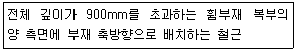
- 표피철근
- 주철근
- 후프철근
- 사인장철근
(정답률: 52%)
79. 콘크리트 구조물의 균열에 대한 보수공법으로 가장 거리가 먼 것은?
- 에폭시 주입법
- 드라이 패킹
- 폴리머 침투
- 상판 단면증설공법
(정답률: 66%)
80. 다음 그림과 같은 복철근 직사각형 보에서 등가압축응력의 깊이(a)는 얼마인가? (단, As=3210mm2. As'=1014mm2, fck=20MPa, fy=300MPa)
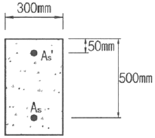
- 101.3mm
- 116.8mm
- 129.2mm
- 143.7mm
(정답률: 50%)
배합강도 = 최소한의 강도 + 1.65배의 표준편차
여기서 1.65는 95%의 신뢰도를 가지는 경우의 상수이다. 따라서, 배합강도는 10MPa + 1.65 × 5MPa = 18.25MPa가 된다. 하지만, 이 또한 너무 낮은 강도이므로, 일반적으로는 2배의 표준편차 범위 내에서 강도를 구한다고 했으므로, 20MPa에서 2배의 표준편차 10MPa를 빼면 최소한의 강도인 10MPa가 나온다. 이를 기반으로, 배합강도를 구하기 위해 다음과 같은 식을 사용할 수 있다.
배합강도 = 최소한의 강도 + 1.96배의 표준편차
여기서 1.96은 95%의 신뢰도를 가지는 경우의 상수이다. 따라서, 배합강도는 10MPa + 1.96 × 5MPa = 19.8MPa가 된다. 이 값은 설계기준 압축강도 20MPa를 넘지 않는 최소한의 강도를 만족하면서, 가능한 최대한의 강도를 가지는 값이다. 따라서, 보기에서 정답은 "27.0MPa"이다.